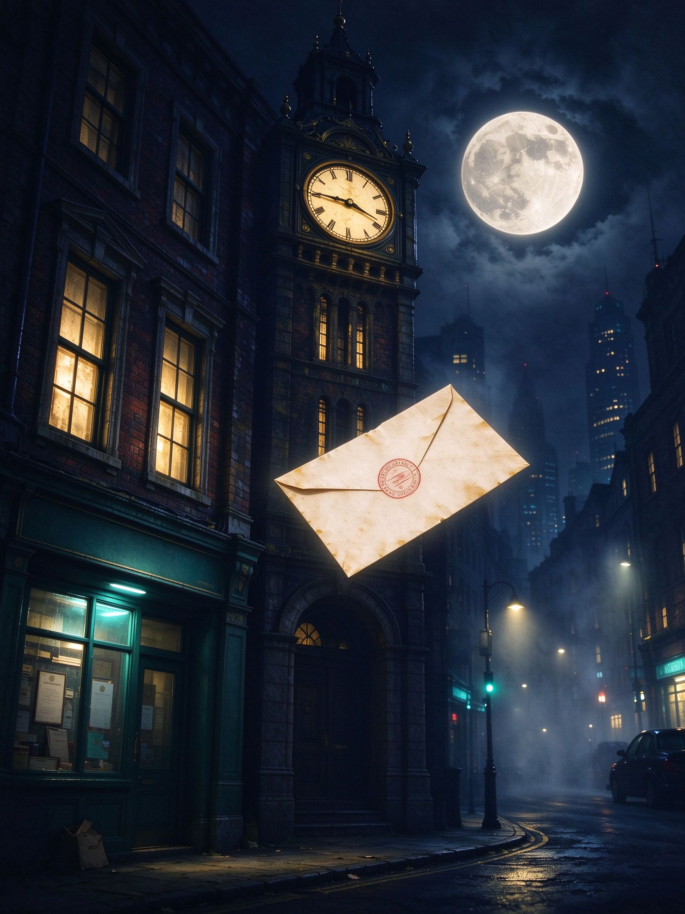
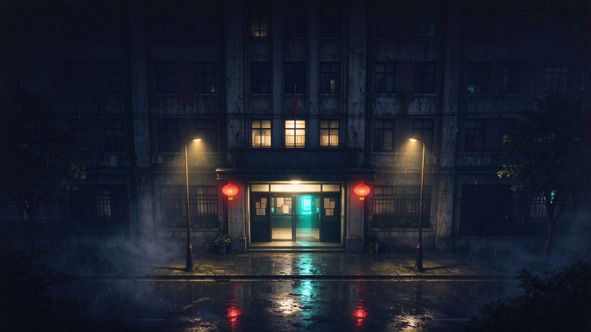
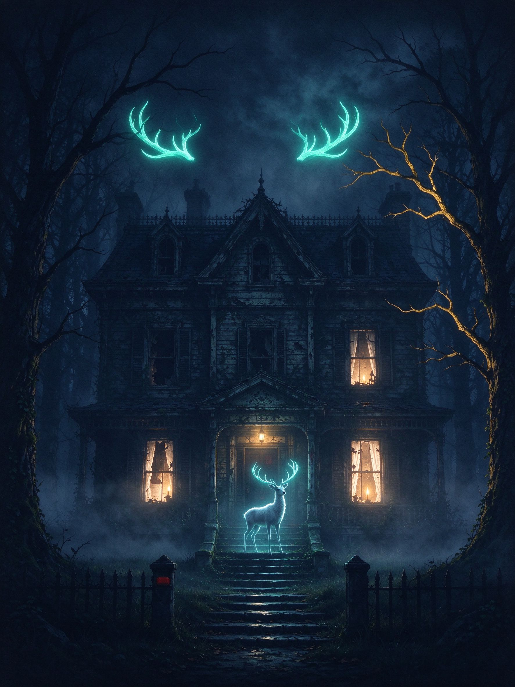
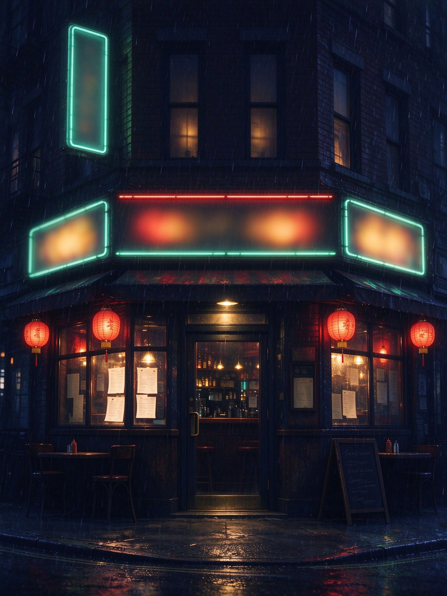
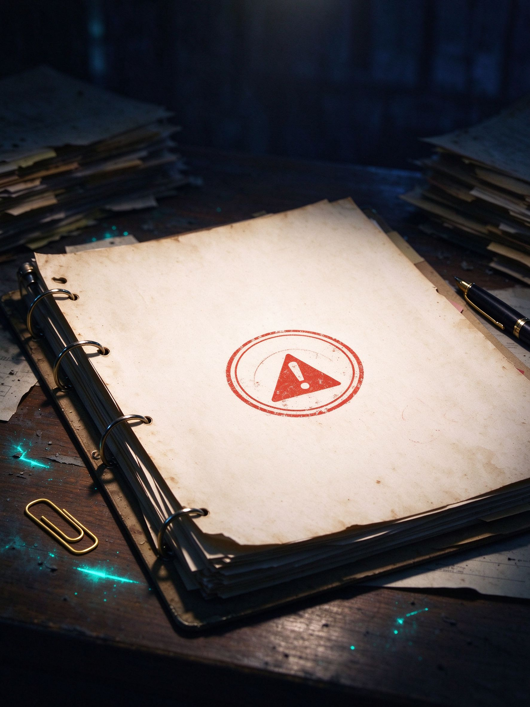
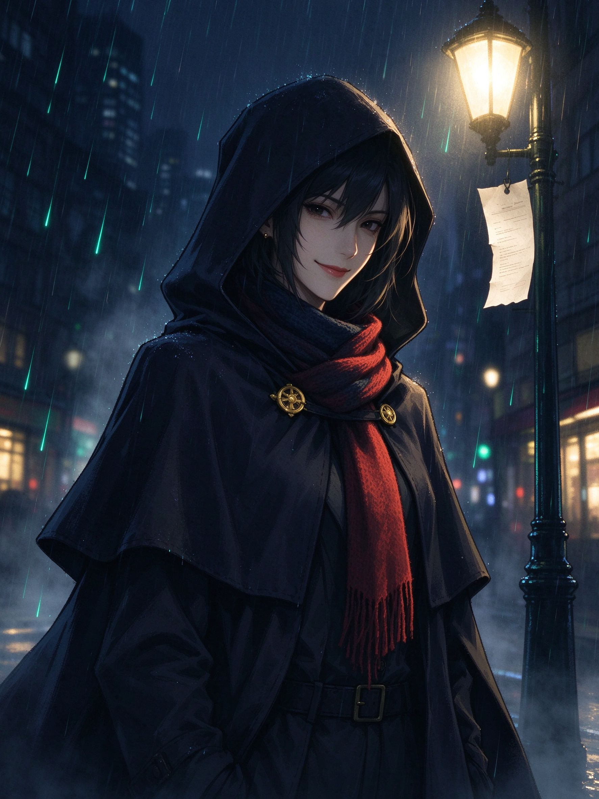
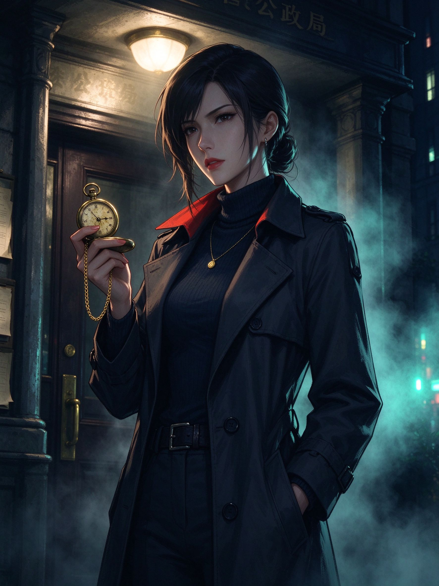

月隐来信
一封没有署名的来信，引你走入月色下的雾港。

输入档案编号与密钥，进入互动故事档案局
试用编号 admin · 密钥 0000
在光与影交织的世界，与 AI 角色相遇。用你的每一次选择，写下独一无二的下一章。

一封没有署名的来信，引你走入月色下的雾港。

误入千年古林，与会说话的白鹿同行。

深夜的酒馆里，每一杯酒都藏着一个故事。

我改编的版本，加入了新的支线角色。
创建你的第一个剧本，让故事开始流动。
一封没有署名的来信，在雾港的邮筒里躺了二十年。信上只有一句话：「月圆之夜，来老钟楼见我。」你循着地址走进夜色，发现这座城里的每个人，都在等一封永远不会寄出的信。


你在档案局整理旧案时，发现那封二十年前的信被重新归档——收件人一栏，写着你的名字。
你在雨夜走进雾港唯一的邮局，柜台后的老人说：你终于来了，这封信等你二十年了。
二十年前，邮差阿镜在雾港大桥上遇到一场大雾，信没能送出。
二十年后的今夜，你把信送到了它该去的地方——而写信的人，一直在等你。
选择已有剧本，确认内容后再进行解析。
支持 TXT、Markdown、PDF、Word（DOCX），单个文件不超过 20 MB。
尚未选择文件
当前为前端审核预览，文件仅在本机选择；剧本上传与解析需要接入后端服务。
《月隐来信 · 我的版本》 · 正在构建角色与场景，请稍候
你的剧本《雾都旧案》包含可能引起争议的内容，未通过平台内容审核。
请根据审核意见修改后重新提交。